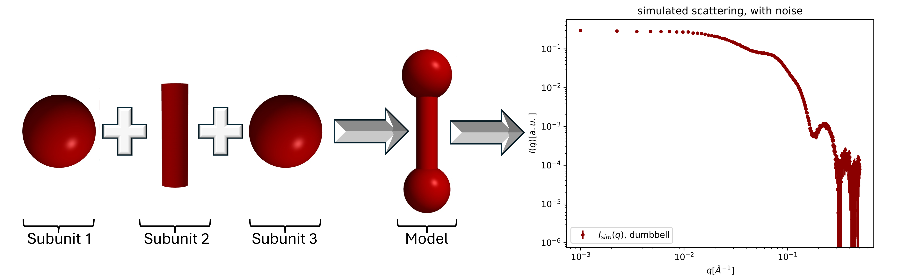

Home
Shape2SAS

Shape2SAS simulates small-angle x-ray scattering (SAXS) from user-defined shapes. The models are build from geometrical subunits, e.g., a dumbbell constructed from a cylinder and two translated spheres. The shape is filled with points and the scattering is calculated by a Debye sum.
Overview
- Web application at GenApp
- Batch version (pymol script) at GitHub
- Part of SasView (version 6.1.0 or newer; Tools > Shape2SAS)
- Publication: Larsen et al. 2025